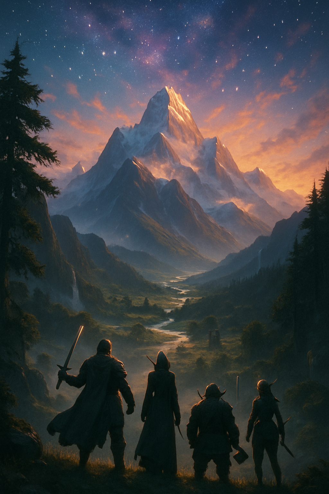

🧝♂️
Epic Fantasy Quest
Giant worlds, ancient monsters, and a quest through time.
Inspired by The Lord of the Rings. Races, languages, mythologies.
The journey may take a decade—but some quests demand it.
🌍 What Defines This World Type?
- Expansive continents with varied climates, kingdoms, and histories.
- Multiple sentient races, each with distinct cultures and tensions.
- Magic systems rooted in old lore or mystical artifacts.
- Quests that span years, across mountains, deserts, and empires.
📚 Worldbuilding Tips
- Invent one or two core myths—these shape religions, prophecies, and politics.
- Create maps early to anchor scale and travel time.
- Use consistent naming patterns to deepen immersion (Elven vs Dwarven names).
- Decide what magic can’t do—that’s where tension and challenge emerge.
🧩 Narrative Hooks
- A cursed ring that slowly changes its bearer.
- A child prophesied to bring peace—but only after loss.
- Ancient ruins with puzzles that recall long-forgotten wars.
- An artifact scattered across lands, reuniting it awakens a sleeping god.
🎮 Game Design Ideas
- World map progression: from local conflicts to global stakes.
- Companions with backstories, loyalty quests, or betrayals.
- In-game tomes or songs that reveal hidden lore or hints.
- Seasons or timelines that shift events or availability of paths.